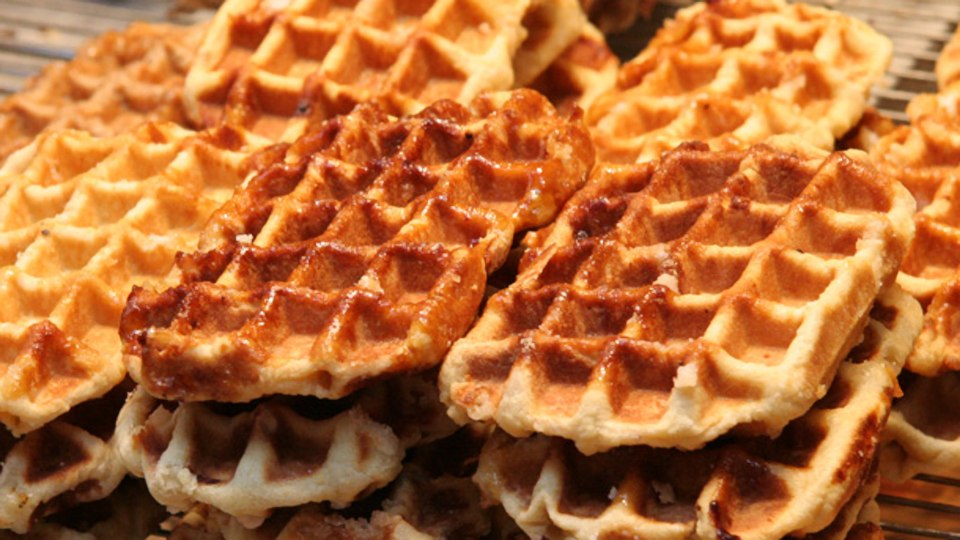

Jesse Singal is a liberal person who is not afraid to go against the beliefs of the radical left. For example, he defended Alcoholics Anonymous in an era when the left wing media was using questionable (and ultimately false) science to claim AA didn’t work.
He once published an article which challenged some assumptions transgender people make by emphasizing the stories of people who decided they were transgender, then changed their mind and wanted to keep their biological gender instead.
Since the story was published by The Atlantic, who also published a biased and inaccurate article which claimed Alcoholics Anonymous was ineffective, I will assume that the article was similarly biased and inaccurate. But that’s not the point.
Keep in mind that this story was published in 2018, seven years ago.
Earlier this month, someone asked for Singal to be removed from the left-wing microblogging Twitter clone Bluesky. The CEO of Bluesky responded by posting “Waffles!”, in reference to a thread where someone used Waffle House in an imaginary example of how people can be really sanctimonious on social media.
Instead of having self reflection and seeing where people can be inappropriately bitter and resentful over something that happened nearly a decade ago, the Bluesky mob got really angry that someone they don’t like is allowed to express their views on the Bluesky platform.
Nate Silver even has a term for this kind of behavior, which apparently is all too common: Blueskyism
As an aside, NPR just posted a piece on how someone got canceled for mocking Charlie Kirk after he was murdered, but NPR has not, as I type this, posted about how the left wing mob has gone after Singal.
The best response to speech we do not like is more speech. When people lie about whether Alcoholics Anonymous works, let’s dig up some research showing that AA does work. When some misogynistic guys falsely claim 80% of the women sleep with 20% of the men, let’s post some facts showing that is not true.
To respond to information we do not like with attempts to get the person fired or removed from social media results in more anger and false information begin spread.
It is better to respond to heat with light, not more heat.
The picture of the waffles is public domain.
The picture of Jesse Singal was taken by a YouTube user who uses the alias “Rebel Wisdom”, is available under a CC 3.0 license, and has been altered.